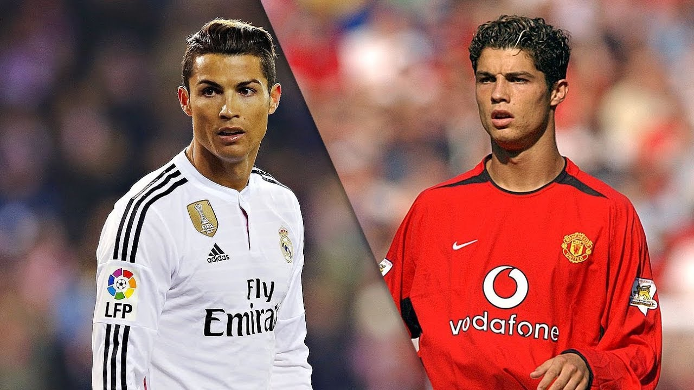

Although Cristiano Ronaldo didn't start his career in the Premier League (England soccer league), that is the place where the world met who would one day be one of, if not the greatest to ever play the game. He transferred from Sporting CP (a Portuguese team) for a €19 fee to Manchester United. He played there for 5 years. Being one of the best players in the league with 2008 being one of the best years played by a single player. That year, he won the champions league, club world cup, premier league, and the community shield with Manchester United. When it comes to individual trophies, he won the ballon d'or, golden boot, UEFA player of the year, and the FIFA world best player. All of this while having 42 goals and 8 assists in 49 games. The crazy part was that this happened before he changed position to striker. He played midfielder that year. If he was a striker, he would've easily gotten 100+ goals that year.
Ronaldo is mostly known for playing in the biggest club, history-wise, in history. Real Madrid. He became the club's top goalscorer in history, scoring 450 goals in 438 games. He had more goals than matches played, if that is not impressive I don't know what is. He won the Champions League 4 times with Real Madrid as well as 4 more ballon d'ors. He is the club's biggest legend and will always be remembered wearing the iconic white jersey.
